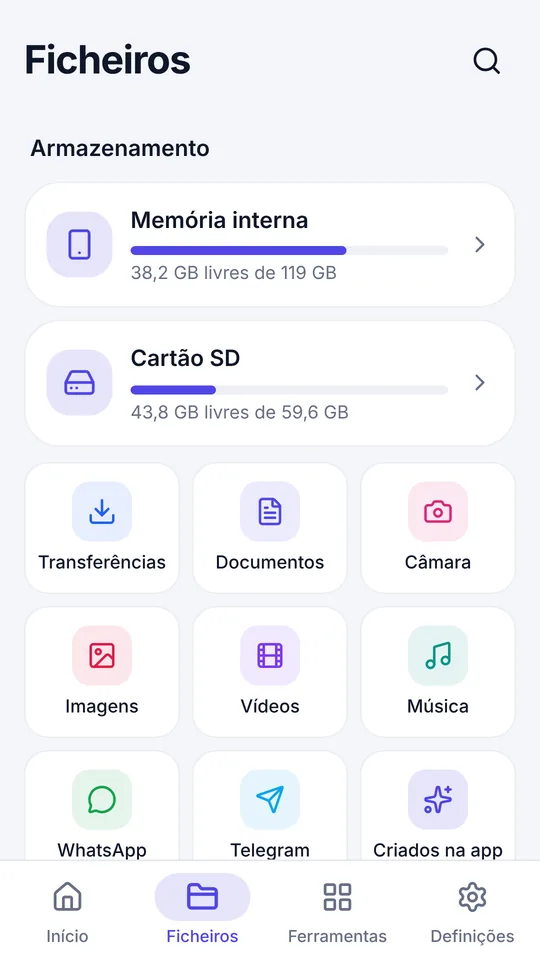
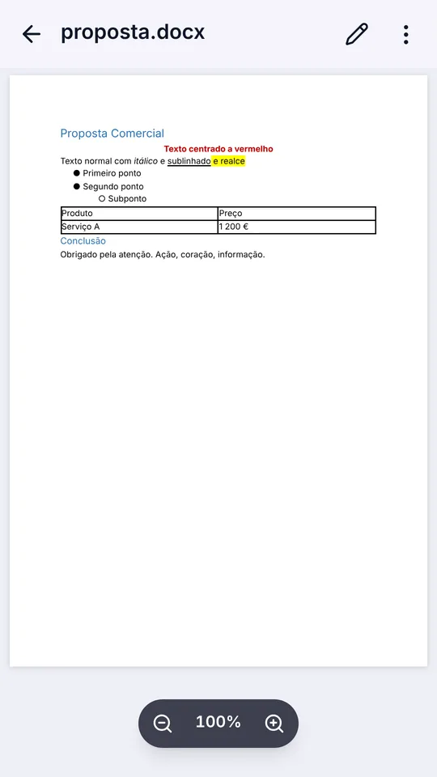
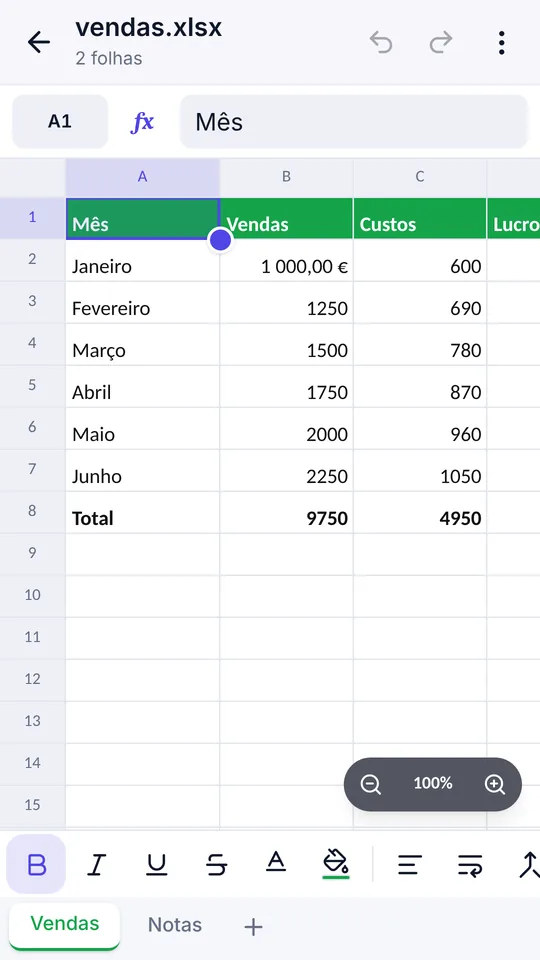
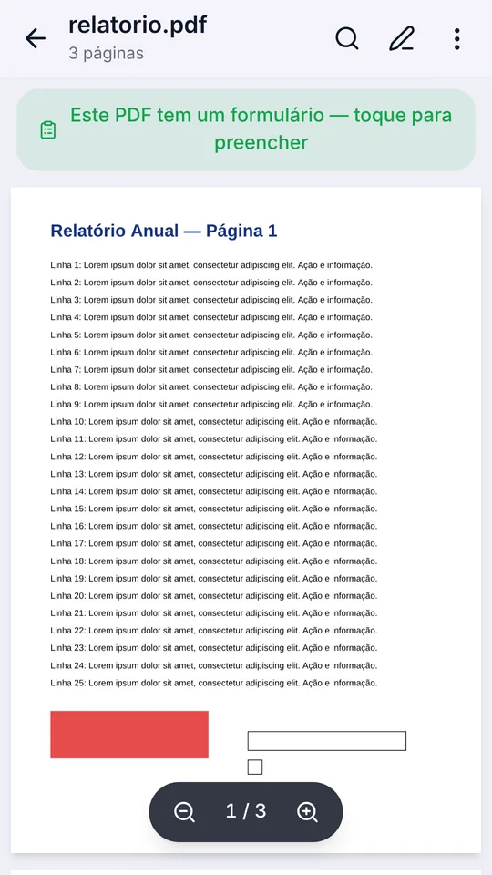
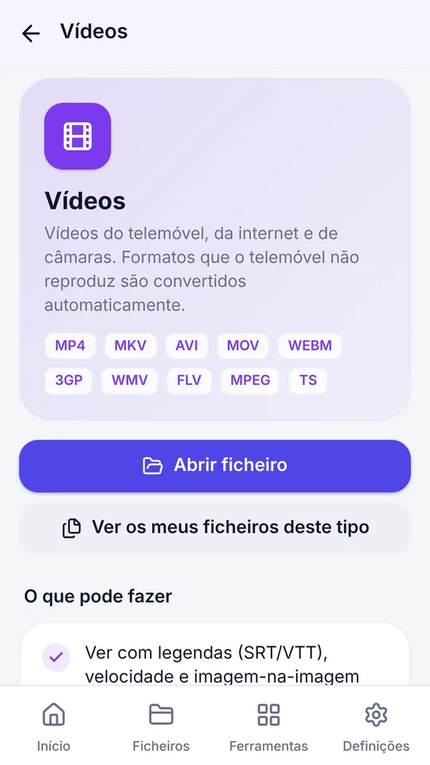

Omnio
OmnioEscritório no bolso
- Documentos de texto com o aspeto original, para ver e editar
- Folhas de cálculo com fórmulas em português e gráficos
- Apresentações: editar e apresentar em ecrã inteiro
- Converter entre formatos e exportar para PDF
Documentos, folhas de cálculo, apresentações, fotos, vídeos, música, livros e muito mais — abra, edite e converta no telemóvel, sem enviar nada para a internet.
Uma app em vez de dez
Abra o que recebe por mensagem, por email ou na nuvem e trabalhe nele logo ali. As alterações ficam guardadas no próprio ficheiro, onde quer que ele esteja.
E ainda livros digitais, código com cores, modelos 3D, tipos de letra, emails guardados, contador de palavras e comparação de textos — mais de 70 ferramentas, organizadas e fáceis de encontrar.
Por dentro





Privado por natureza
Tudo é feito no próprio dispositivo. O Omnio não tem servidores, não pede conta e não sabe o que abre.
Perguntas frequentes
Sim. Todas as funções são grátis, sem subscrições, sem pagamentos e sem anúncios.
Não. Tudo funciona sem internet, incluindo a conversão de ficheiros e o reconhecimento de texto em fotos. Só usa a internet se o pedir, por exemplo ao abrir um link.
Não. Os ficheiros são abertos e tratados no seu telemóvel e ficam onde estão — na memória, no cartão SD ou na sua nuvem. O Omnio não recolhe dados.
Documentos (DOCX, DOC, ODT, RTF), folhas de cálculo (XLSX, XLS, ODS, CSV), apresentações (PPTX), PDF, fotos (JPG, PNG, HEIC, WEBP, GIF, TIFF, RAW, PSD), vídeos (MP4, MKV, MOV, AVI, WEBM…), música (MP3, M4A, FLAC, WAV, OGG…), ficheiros comprimidos (ZIP, RAR, 7Z, TAR), livros EPUB, texto e código, modelos 3D, tipos de letra e emails guardados, entre outros.
Sim. Quando edita um ficheiro, pode guardar no próprio ficheiro — também em pastas da nuvem — ou criar uma cópia. Os ficheiros novos que a app cria ficam na pasta Documentos/Omnio.
Em telemóveis e tablets Android 7.0 ou mais recentes.